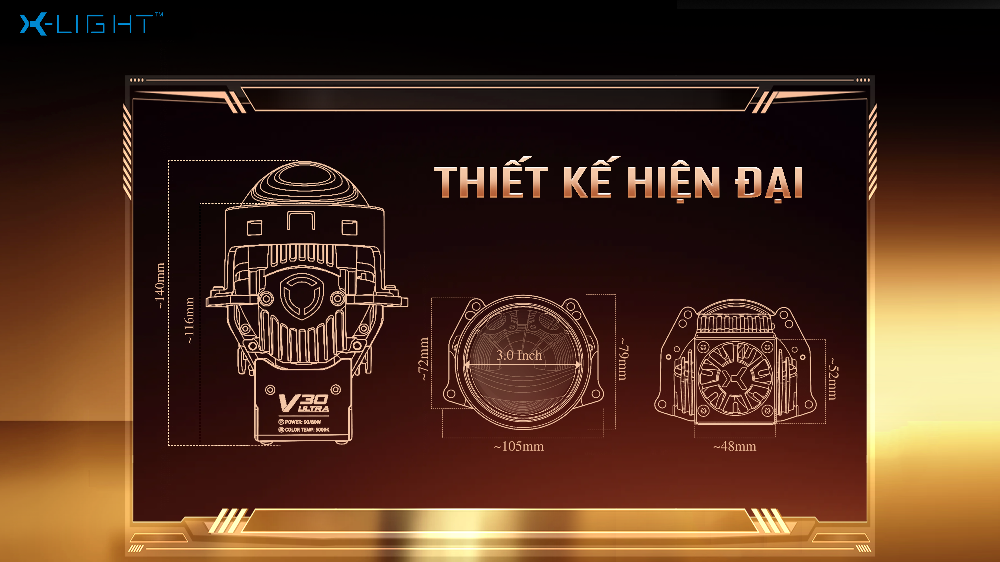
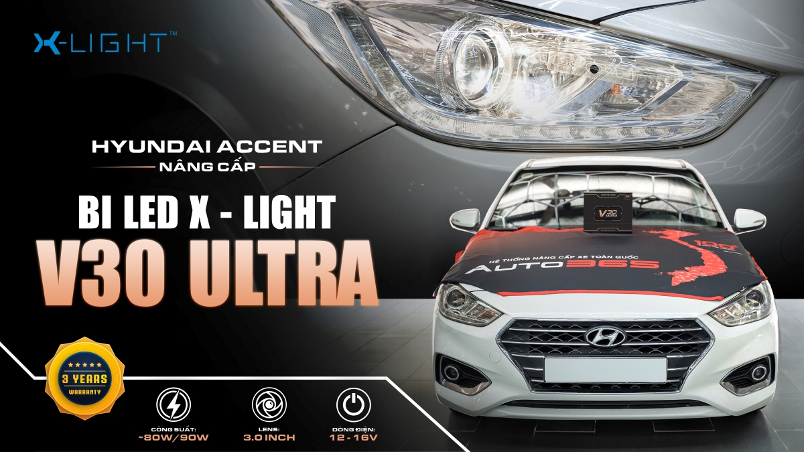

Case ghi rõ phiên bảnKhông đánh đồng 2022/2023 với 2026
Bàn giao sốSeri, beam và bảo hành điện tử
Hệ thống 90+Tìm điểm Auto365 theo khu vực
Trả lời nhanh
V30 Ultra 2026 có phù hợp với bạn?
V30 Ultra 2026 phù hợp để cân nhắc khi đèn chính Cos/Pha hiện tại chưa đáp ứng nhu cầu đi đêm, đường trường hoặc khu vực thiếu sáng, đồng thời xe đủ điều kiện lắp lens 3.0 inch sau khi kiểm tra trực tiếp.
Thường xuyên đi đêm hoặc đường trường.
Cần cải thiện vùng sáng của đèn chính Cos/Pha.
Sẵn sàng kiểm tra cụm đèn, hệ thống điện và căn chỉnh sau lắp.
Nếu đèn hiện tại vẫn đáp ứng tốt, nên kiểm tra nhu cầu thực tế trước khi quyết định nâng cấp.
Ngữ cảnh chọn giải pháp
3 hướng nâng cấp đèn ô tô: giữ nguyên, đổi bulb hay lắp bi LED nguyên cụm
Trước khi quyết định lắp V30 Ultra, nên hiểu rõ 3 hướng đang có trên thị trường. Không hướng nào "sai" — mỗi hướng phù hợp với nhu cầu và ngân sách khác nhau. Đối chiếu ngắn dưới đây để xác định mình đang ở nhóm nào trước khi vào chi tiết sản phẩm.
So sánh 3 hướng nâng cấp đèn ô tô — dữ liệu tham khảo
Hướng
Chi phí tham khảo
Ưu điểm chính
Hạn chế
Phù hợp khi
Giữ nguyên đèn zin
0 đồng
Không rủi ro bảo hành hãng, không can thiệp cụm đèn
Đèn zin nhiều dòng xe VN yếu cho điều kiện đi đêm
Đi trong phố, ít đi đêm, đèn hiện tại vẫn đáp ứng nhu cầu
Chỉ đổi bulb LED/HID
200 - 800 nghìn
Chi phí thấp, không phá cụm đèn
Beam pattern thường loạn do bulb không match choá gốc, khó căn chỉnh chuẩn
Ngân sách hạn chế; xe không yêu cầu tiêu chuẩn chiếu sáng nghiêm ngặt
Lắp bi LED nguyên cụm (V30 Ultra)
11 triệu + công lắp
Beam đúng chuẩn, cắt sáng chuẩn, bảo hành sản phẩm 3 năm
Chi phí cao hơn, cần can thiệp cụm đèn theo từng xe
Đi đêm nhiều, đường trường, đèo, ưu tiên an toàn quan sát
Bảng phản ánh dữ liệu tham khảo tại thời điểm cập nhật; chi phí thực tế phụ thuộc dòng xe và tình trạng cụm đèn. Auto365 khuyến nghị chủ xe không có kinh nghiệm can thiệp đèn nên tham vấn kỹ thuật trước khi tự chọn hướng.
Nếu đã chọn hướng lắp bi LED, nên chọn V30 Ultra phiên bản nào?
Lắp mới ở thời điểm hiện tại: V30 Ultra 2026 thường được ưu tiên tư vấn nhờ Cos ≈ 80W, Pha ≈ 90W, chip LED 12+3 Osram, nhiệt màu 5000K, Turbo Boost và hệ tản nhiệt đa tầng.
Đang dùng V30 Ultra 2022 hoặc 2023: Nếu ánh sáng hiện tại vẫn đáp ứng nhu cầu, chưa nhất thiết phải nâng cấp ngay. Trường hợp thường xuyên đi đêm, đường trường hoặc muốn trải nghiệm cấu hình mới, có thể kiểm tra lại hệ đèn hiện tại để cân nhắc lên bản 2026.
Xe điện, xe đời mới, xe có hệ điện phụ trợ nhạy: Nên kiểm tra cấu trúc cụm đèn, điện áp, giắc kết nối và phương án đấu nối trước khi quyết định lắp — không kết luận tương thích chỉ dựa vào dải điện áp.
6 điểm nổi bật của V30 Ultra 2026
Cos ≈80WĐịnh hướng vùng sáng gần phía trước xe.Pha ≈90WHỗ trợ nhu cầu quan sát xa.5000KTrắng ngả vàng, tránh quá trắng xanh.Turbo BoostDùng theo điều kiện vận hành.12+3 OsramCấu hình Cos/Pha của bản 2026.Lens 3.0 inchCần kiểm tra không gian cụm đèn.
Video tham khảo V30 Ultra
Xem video để tham khảo trước khi đối chiếu thông số và kiểm tra khả năng lắp đặt trên từng xe.
V30 Ultra giải quyết vùng sáng nào?
Đây là sơ đồ phân vai, không phải mô phỏng quang học hay cam kết beam giống nhau cho mọi xe.
Đi phố: ưu tiên cân bằng
Nếu đèn hiện tại vẫn đáp ứng tốt, chưa nhất thiết cần cấu hình công suất cao.
Kiểm tra vùng Cos hiện tại.
Không mặc định bật Turbo Boost liên tục.
Chỉ thêm bi gầm khi vùng thấp thật sự còn thiếu.
Ảnh mô phỏng vùng chiếu theo tình huống — không phải ảnh beam đo trên xe cụ thể. Hiệu quả trên từng xe cần kiểm tra bằng beam sau căn chỉnh.
Vì sao V30 Ultra 2026 sử dụng nhiệt màu 5000K?
5000K tạo ánh sáng trắng ngả vàng nhẹ, hướng đến cảm giác cân bằng khi sử dụng trong nhiều điều kiện di chuyển. Đây là một trong những thay đổi của phiên bản V30 Ultra 2026 so với bản 5500K trước đây.
Ánh sáng cân bằng, dễ làm quen
Tông màu 5000K không quá trắng xanh, phù hợp với người thường xuyên di chuyển vào ban đêm, đi tỉnh hoặc gặp thời tiết thay đổi. Cảm nhận thực tế có thể khác nhau tùy điều kiện đường và thị lực người lái.
Nhiệt màu chỉ là một phần
Hiệu quả chiếu sáng còn phụ thuộc vùng sáng, cường độ, cấu trúc cụm đèn và bước căn chỉnh sau khi lắp. Vì vậy, nên xem ánh sáng thực tế trên xe thay vì chỉ so sánh thông số 5000K và 5500K.
Mỗi nhiệt màu mang lại cảm nhận khác nhau. Auto365 khuyến nghị kiểm tra beam và nhu cầu sử dụng thực tế trước khi lựa chọn.
Số đo thực tế
Số đo ánh sáng trước và sau khi lắp V30 Ultra 2026
Số liệu phải được đo trực tiếp trên một xe cụ thể theo giao thức cố định. Kết quả chỉ phản ánh xe được đo; hiệu quả trên xe khác cần kiểm tra lại.
Kết quả đo lux tại điểm cố định — [khoảng cách] — [tên xe + đời xe]
Hạng mục
Trước khi lắp
Sau khi lắp + căn chỉnh
Cos — lux tại tâm beam
—
—
Pha — lux tại tâm beam
—
—
Điều kiện đo: [thiết bị] · [ngày đo] · [điều kiện ánh sáng/thời tiết] · [người đo]. Ảnh beam và bản ghi đo phải được lưu trong hồ sơ case.
Kiểm tra V30 Ultra theo dòng xe
Chọn mẫu xe, đời xe và nhu cầu sử dụng để xem các hạng mục cần kiểm tra trước khi lắp.
Ai nên cân nhắc V30 Ultra 2026 theo cách sử dụng thực tế
Không chỉ dựa vào tên xe hay đời xe — nhu cầu và tần suất sử dụng mới là yếu tố quyết định V30 Ultra có phù hợp không. Đối chiếu 4 hồ sơ dưới đây trước khi kiểm tra xe để rút ngắn quá trình tư vấn.
Chủ xe dịch vụ đi đêm 4–6 tiếng mỗi ngàyƯu tiên an toàn quan sát và giảm mỏi mắt sau ca dài. V30 Ultra giúp Cos ổn định cho di chuyển liên tục và Pha đủ mạnh khi vượt đường trường vào ban đêm.
Gia đình đi phượt cuối tuần, đường đèo và tỉnh lộƯu tiên quan sát vệt đường, vật cản gần và bóng tối bên đường. Nên cân nhắc combo V30 Ultra ở đèn chính kết hợp bi gầm để phủ cả vùng sáng thấp gần mặt đường.
Chủ xe điện di chuyển thành phố (VF6, VF8, xe điện đời mới)Ưu tiên đèn chính đủ mạnh cho buổi tối. Xe điện có hệ điện phụ trợ và cảnh báo nhạy hơn xe xăng — bắt buộc kiểm tra pát, giắc và cảnh báo lỗi trước khi thi công.
Chủ SUV/sedan di chuyển 100% trong phốCos đủ cho di chuyển đường thành thị; chưa nhất thiết cần Pha 90W. Có thể xem xét bản khác nhẹ hơn hoặc chỉ căn chỉnh lại đèn zin nếu ngân sách hạn chế.
Hồ sơ tham khảo dựa trên tương tác thực tế tại điểm Auto365 — không thay thế bước kiểm tra xe trực tiếp. Chủ xe có cấu hình khác có thể liên hệ để được tư vấn theo tình huống cụ thể.
Bài xe tham khảo theo hãng và mẫu xe
Các ca dưới đây là dữ liệu lịch sử của phiên bản 2022/2023 hoặc cấu hình kết hợp.
Không dùng để khẳng định kết quả của V30 Ultra 2026.
ToyotaSedan phổ thôngCase đời trước
Toyota Vios
Tham khảo nhiều cấu hình V30 Ultra và nội dung thi công trên sedan phổ thông.
Mỗi dòng xe có cấu trúc cụm đèn khác nhau. Auto365 sẽ kiểm tra khả năng lắp V30 Ultra, tư vấn phương án và báo chi phí theo tình trạng thực tế trước khi thi công.
Quy trình 7 bước giúp thống nhất phương án trước khi làm, kiểm soát chất lượng sau lắp và bàn giao đầy đủ thông tin bảo hành.
1Tiếp nhận xeGhi nhận tình trạng xe, hệ thống đèn hiện tại và nhu cầu sử dụng thực tế.2Tư vấn phương ánĐánh giá vị trí hốc đèn gầm, hệ thống điện và phương án lắp phù hợp.3Xác nhận thi côngThống nhất hạng mục, chi phí dự kiến và phụ kiện phát sinh nếu có.4Thi công lắp đặtLắp đặt bằng pát phù hợp, đi dây gọn và ưu tiên không cắt dây zin nếu không cần thiết.5Căn chỉnh ánh sángCăn chỉnh Cos/Pha, độ cao và mặt cắt sáng để hỗ trợ hạn chế chói.6Kiểm tra chất lượng QCKiểm tra độ kín, giắc kết nối, nguồn điện và cảnh báo lỗi trên bảng đồng hồ.7Bàn giao và bảo hànhHướng dẫn sử dụng, lưu hoặc kích hoạt bảo hành điện tử nếu sản phẩm hỗ trợ.
Bàn giao số nên có
Ảnh sản phẩmĐúng phiên bản đã lắp.
Beam Cos/PhaẢnh sau căn chỉnh trên chính xe.
Thông tin seriKhớp tem và dữ liệu kích hoạt.
Điểm thi côngNgày lắp và đầu mối hỗ trợ.
Chỉ nên xác nhận là sản phẩm chính hãng khi sản phẩm thực tế, số seri/tem, dữ liệu kích hoạt trên kênh bảo hành chính thức và chứng từ bàn giao khớp nhau.
Thông số và phiên bản — mở khi cần
Thông số V30 Ultra 2026
Thông số
Chi tiết
Ý nghĩa
Chip LED
12+3 Osram
Cấu hình Cos/Pha của bản 2026.
Cos
Khoảng 80W
Định hướng vùng sáng gần.
Pha
Khoảng 90W
Hỗ trợ quan sát xa.
Nhiệt màu
5000K
Trắng ngả vàng.
Turbo Boost
Có
Dùng theo bối cảnh vận hành.
Lens
3.0 inch
Phải kiểm tra cụm đèn.
Tản nhiệt
Đế đồng DTP + ống đồng + khối tản nhiệt nhôm + nắp nhôm + quạt 45mm
Cấu trúc đa tầng, xem chi tiết bên dưới.
Tuổi thọ công bố
30.000 giờ
Theo công bố nhà sản xuất X-Light.
Điện áp
12V–16V
Vẫn cần kiểm tra điện và giắc.
Bảo hành
3 năm
Theo seri/tem và chính sách.
Cấu hình chiếu sáng Cos và Pha — chi tiết
Cos khoảng 80W — 12 chip LED chóa phản xạ chính
Theo thông tin công bố cho phiên bản 2026, V30 Ultra dùng 12 chip LED ở chóa phản xạ chính cho chế độ Cos khoảng 80W. Nhà sản xuất công bố mức cải thiện khoảng 30% ở chế độ Cos so với phiên bản trước. Trên thực tế, khác biệt vùng sáng chiếu gần còn phụ thuộc chóa đèn nguyên bản, vị trí lắp, góc căn chỉnh và điều kiện vận hành từng xe.
Pha khoảng 90W — 12 chip chính + 3 Osram chóa phản xạ phụ
Khi chuyển sang chế độ Pha, V30 Ultra kích hoạt đồng thời 12 chip LED chóa phản xạ chính và 3 chip LED Osram ở chóa phản xạ phụ, đạt công suất khoảng 90W. Nhà sản xuất công bố mức cải thiện khoảng 10% khả năng chiếu xa so với phiên bản trước.
Nhiệt màu 5000K
5000K là tông sáng trắng ngả vàng, được lựa chọn khi ưu tiên cân bằng giữa độ rõ vùng sáng và cảm giác nhìn ban đêm; phù hợp hơn với một số điều kiện như đường trường và thời tiết không quá xấu. Trải nghiệm còn phụ thuộc dòng xe và điều kiện môi trường thực tế.
Các số cải thiện % là công bố từ nhà sản xuất X-Light; hiệu quả thực tế trên từng xe cần được kiểm tra bằng beam sau căn chỉnh.
Turbo Boost hoạt động thế nào — khi nào bật, khi nào tắt
Turbo Boost là chế độ cho phép chủ xe thay đổi mức công suất chiếu sáng của đèn tuỳ theo bối cảnh sử dụng. Đây là cách V30 Ultra linh hoạt hơn giữa nhu cầu đi phố hằng ngày và nhu cầu tăng cường ánh sáng khi chạy đường tối.
So sánh trạng thái Bật và Tắt Turbo Boost
Tiêu chí
Bật Turbo Boost
Tắt Turbo Boost
Công suất
Cos khoảng 80W / Pha khoảng 90W.
Công suất vận hành mức tiêu chuẩn, ánh sáng dịu hơn.
Bối cảnh sử dụng
Đường trường, cao tốc, khu vực thiếu sáng.
Đô thị, khu dân cư, đường đã có ánh sáng hỗ trợ.
Mục tiêu
Tăng cường ánh sáng khi đi đêm.
Cân bằng cho điều kiện vận hành hằng ngày.
Không nên bật Turbo Boost liên tục trong mọi điều kiện. Chủ xe nên dùng theo bối cảnh vận hành thực tế và sau khi đèn đã được lắp, căn chỉnh đúng kỹ thuật.
Hệ thống tản nhiệt đa tầng gồm những gì
Hệ thống tản nhiệt V30 Ultra 2026 gồm 4 tầng: đế đồng DTP, ống đồng dẫn nhiệt kết hợp khối tản nhiệt nhôm, nắp tản nhiệt nhôm và quạt làm mát 45mm. Cấu trúc này được thiết kế để hỗ trợ kiểm soát nhiệt khi đèn vận hành ở mức công suất cao.
Đế đồng DTP — tiếp nhận nhiệt trực tiếp từ chip LED và truyền sang hệ thống tản nhiệt. Đồng dẫn nhiệt tốt nên đặt chip LED trên nền đồng giúp nhiệt được truyền nhanh, góp phần giảm tình trạng tích nhiệt.
Ống đồng dẫn nhiệt + khối tản nhiệt nhôm — ống đồng liên kết đế đồng với khối tản nhiệt nhôm phía dưới, đóng vai trò vận chuyển nhiệt từ cụm chip LED ra các vùng tản nhiệt rộng hơn, giúp phân bổ nhiệt đều hơn khi đèn hoạt động ở công suất cao.
Nắp tản nhiệt nhôm — bố trí phía trên chóa phản xạ, tạo cấu trúc làm mát đa hướng, mở rộng bề mặt trao đổi nhiệt và hỗ trợ tản nhiệt cho cụm đèn trong vận hành.
Quạt làm mát 45mm — phía sau đèn, tạo luồng khí lưu thông liên tục để hỗ trợ tản nhiệt.
Hiệu quả thực tế còn phụ thuộc không gian thoát nhiệt trong cụm đèn, thời gian sử dụng liên tục, điều kiện môi trường và chất lượng lắp đặt trên từng xe.
Lens 3.0 inch và thiết kế ngoại hình

Kích thước lens 3.0 inch là cỡ phổ biến trong phân khúc Bi LED tăng sáng và được sử dụng trên nhiều cấu hình nâng cấp đèn ô tô. Tuy nhiên, khả năng lắp đặt thực tế vẫn cần kiểm tra theo từng cụm đèn của từng dòng xe.
Về tổng thể, V30 Ultra được thiết kế theo phong cách cứng cáp, góc cạnh, thiên về cảm giác kỹ thuật. Toàn bộ body đèn được hoàn thiện từ hợp kim nhôm, hướng đến độ hoàn thiện cứng cáp và hỗ trợ khả năng tản nhiệt của sản phẩm.
Giá, chi phí lắp đặt và bảo hành
Giá sản phẩm: 11.000.000 VNĐ/cặp, chưa bao gồm VAT.
Bảo hành: 3 năm, quản lý theo số seri/tem và chính sách áp dụng tại thời điểm tiếp nhận.
Chi phí lắp đặt và hoàn thiện được xác định sau khi kiểm tra xe. Các hạng mục như xử lý cụm đèn, pát chuyển đổi, giắc, dây, vật tư và phát sinh nếu có sẽ được báo rõ trước khi thi công.
Các phiên bản V30 Ultra và điểm mới trên bản 2026
Đối chiếu các phiên bản X-Light V30 và V30 Ultra
Thông số
V30 đời đầu
V30 Ultra 2022
V30 Ultra 2023
V30 Ultra 2026
Nhiệt màu
5200K
5000K
5500K
5000K
Công suất Cos
≈60W
≈75W
≈75W
≈80W
Công suất Pha
≈90W
≈85W
≈85W
≈90W
Cấu hình LED
6 chip
9+3 X-Light Custom
9+3 X-Light Custom
12+3 Osram
Turbo Boost
Không
Không
Không
Có
Hệ thống tản nhiệt
—
Quạt tản nhiệt + nhôm Aluminum
Black Aluminum + quạt tản nhiệt
Đế đồng DTP + ống đồng + khối tản nhiệt nhôm + nắp nhôm + quạt 45mm
Điện áp hỗ trợ
12V
12V
12V
12V–16V
Dấu —: chưa có dữ liệu xác minh trong nguồn hiện tại. Các thông số dùng để đối chiếu phiên bản; hiệu quả thực tế còn phụ thuộc cụm đèn, phương án lắp và bước căn chỉnh trên từng xe.
6 điểm cần kiểm tra trước và sau khi lắp V30 Ultra
Kiểm tra đúng cụm đèn, hệ thống điện và nhu cầu sử dụng giúp chọn phương án phù hợp, hạn chế phát sinh và tối ưu vùng sáng sau khi hoàn thiện.
Kiểm tra cụm đèn và độ tương thích
V30 Ultra dùng lens 3.0 inch nên cần kiểm tra không gian chóa đèn, pát chuyển đổi và khả năng lắp vừa trên xe thực tế. Không chốt phương án chỉ dựa trên tên và đời xe.
Kiểm tra hệ thống điện, dây dẫn và giắc
Đèn hỗ trợ dải điện áp 12V–16V, nhưng vẫn cần kiểm tra nguồn điện, dây dẫn, giắc và phương án đấu nối; đặc biệt với xe điện hoặc xe đời mới có cảnh báo nhạy.
Chọn nhiệt màu theo điều kiện sử dụng
Ánh sáng trắng hơn không đồng nghĩa với khả năng quan sát tốt hơn. Nhiệt màu cần được cân nhắc cùng beam pattern, điều kiện thời tiết và cung đường thường đi.
Căn chỉnh Cos/Pha sau khi lắp
Góc chiếu quá cao có thể gây chói, còn quá thấp sẽ hạn chế vùng quan sát. Cần căn chỉnh độ cao và mặt cắt sáng trên chính chiếc xe sau khi hoàn thiện.
Sử dụng Turbo Boost đúng tình huống
Turbo Boost phù hợp khi đi đường tối, đường trường hoặc cao tốc. Không cần bật liên tục trong khu vực đô thị đã có ánh sáng hỗ trợ.
Kiểm tra thông tin bảo hành và bàn giao
Trước khi nhận xe, cần đối chiếu đúng tên sản phẩm, số seri, thời hạn bảo hành và điểm thi công. Nên lưu ảnh sản phẩm, beam Cos/Pha sau căn chỉnh và thông tin liên hệ hỗ trợ.
Nếu đã lắp V30 Ultra ở nơi khác và vùng sáng chưa đúng như kỳ vọng, có thể mang xe đến điểm Auto365 để đối chiếu beam và căn chỉnh lại.
Câu hỏi thường gặp về V30 Ultra
Bi LED X-Light V30 Ultra 2026 là gì?
Đây là phiên bản mới nhất của dòng Bi LED X-Light V30 Ultra, dùng lens 3.0 inch, cấu hình 12+3 Osram, công suất tham chiếu Cos khoảng 80W, Pha khoảng 90W, nhiệt màu 5000K và có Turbo Boost.
Giá V30 Ultra 2026 là bao nhiêu?
Giá niêm yết là 11.000.000 VNĐ/cặp, chưa bao gồm VAT. Công lắp, pát chuyển đổi, giắc, dây, vật tư và hạng mục phát sinh được báo theo tình trạng thực tế của từng xe.
V30 Ultra 2026 khác gì bản 2023?
Theo dữ liệu hiện có, bản 2026 dùng 12+3 Osram, Cos khoảng 80W, Pha khoảng 90W, 5000K, có Turbo Boost và tản nhiệt đa tầng; bản 2023 dùng 9+3, Cos khoảng 75W, Pha khoảng 85W và nhiệt màu 5500K.
Xe điện như VinFast VF6 hoặc VF8 có lắp được không?
Có thể được xem xét trên một số xe điện, nhưng không thể xác nhận chỉ dựa trên dải điện áp. Cần kiểm tra cụm đèn, pát, giắc, hệ thống điện phụ trợ và cảnh báo lỗi của từng mẫu xe.
5000K có phù hợp khi đi mưa hoặc sương không?
5000K tạo tông trắng ngả vàng so với bản 5500K. Hiệu quả quan sát trong mưa hoặc sương còn phụ thuộc beam pattern, cường độ, mặt đường, thời tiết và bước căn chỉnh; không nên xem nhiệt màu là yếu tố duy nhất.
Nên lắp V30 Ultra hay thêm bi gầm?
Cân nhắc V30 Ultra khi vùng thiếu sáng nằm ở đèn chính Cos/Pha. Bi gầm chỉ nên được xem xét khi còn thiếu vùng sáng thấp gần mặt đường hoặc thường xuyên đi mưa, đèo và đường thiếu sáng.
V30 Ultra có gây chói xe đối diện không?
Khả năng gây chói phụ thuộc cụm đèn, vị trí lắp và đặc biệt là bước căn chỉnh đường cắt sáng. Lắp và căn chỉnh đúng kỹ thuật giúp hạn chế ánh sáng chiếu trực tiếp vào xe đối diện.
Thời gian thi công mất bao lâu?
Thời gian tham khảo khoảng 5–7 tiếng, tùy cấu trúc cụm đèn, phương án đi dây và thời gian căn chỉnh thực tế.
Bảo hành V30 Ultra bao lâu?
Sản phẩm được bảo hành 3 năm theo số seri, tem hoặc phiếu bảo hành và chính sách áp dụng tại thời điểm tiếp nhận.
Kích hoạt bảo hành điện tử như thế nào?
Sau khi lắp, điểm thi công ghi nhận số seri, thông tin xe, ngày lắp và kích hoạt trên hệ thống bảo hành. Chủ xe cần kiểm tra lại tên sản phẩm, số seri, ngày kích hoạt, thời hạn bảo hành và điểm thi công trước khi nhận xe.
Bi LED V30 Ultra khác gì V30L Ultra và M30 Ultra?
Đây là ba dòng đèn khác nhau, dễ nhầm vì tên gần giống: Bi LED X-Light V30 Ultra (sản phẩm trong bài này) là bi LED nâng cấp đèn chính ô tô; X-Light V30L Ultra là dòng Bi Laser, dùng công nghệ nguồn sáng khác; còn M30 Ultra là đèn trợ sáng của Titan dành cho mô tô, không phải đèn chính ô tô. Khi tìm hiểu hoặc báo giá, nên gọi đủ tên "Bi LED X-Light V30 Ultra" để được tư vấn đúng dòng.
Lắp V30 Ultra có ảnh hưởng đăng kiểm không?
Khả năng đáp ứng yêu cầu kiểm định phụ thuộc phương án cải tạo cụm đèn, tình trạng xe sau thi công và quy định được áp dụng tại thời điểm kiểm tra. Auto365 không tự diễn giải quy định đăng kiểm — chủ xe nên xác minh trực tiếp với đơn vị đăng kiểm hoặc trung tâm đăng kiểm địa phương trước khi thực hiện.
Dữ liệu và trường hợp tham khảo
Các nội dung dưới đây giúp đối chiếu lịch sử thi công, phiên bản sản phẩm và nhu cầu sử dụng. Bài viết về bản 2022 hoặc 2023 không thay thế bước kiểm tra trực tiếp đối với V30 Ultra 2026.
Nguồn dữ liệu: thông số và phiên bản theo dữ liệu sản phẩm X-Light/365Group; giá, bảo hành và quy trình theo thông tin Auto365 tại thời điểm cập nhật; các bài 2022/2023 chỉ là dữ liệu lịch sử, không dùng để cam kết kết quả bản 2026. Khả năng lắp đặt phải được kiểm tra trên xe thực tế.
Gửi thông tin để Auto365 kiểm tra xe

Hình ảnh Hyundai Accent nâng cấp Bi LED X-Light V30 Ultra — dùng để tham khảo; phiên bản và khả năng lắp đặt cần kiểm tra theo từng xe.
Kiểm tra xe trước khi xác nhận phương án lắp
Gọi và báo tên xe, đời xe, tình trạng đèn hiện tại và nhu cầu đi đêm.
Auto365 sẽ hướng dẫn bước kiểm tra phù hợp trước khi chốt sản phẩm và chi phí.